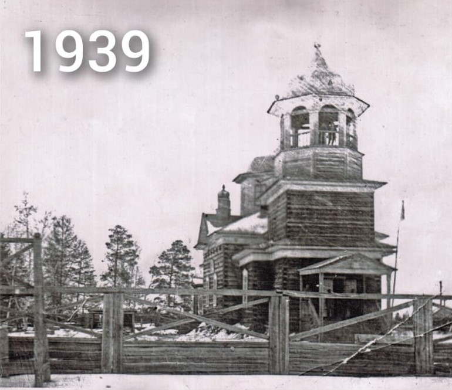
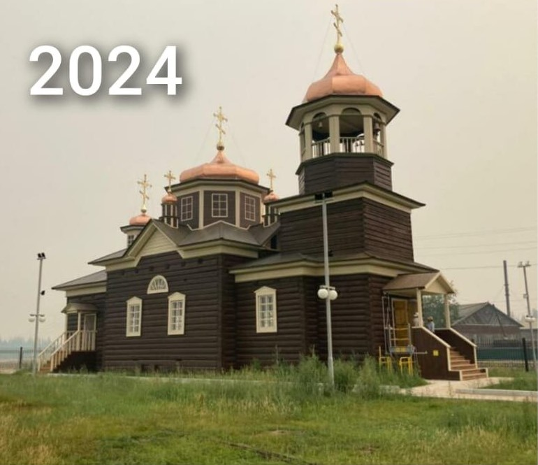
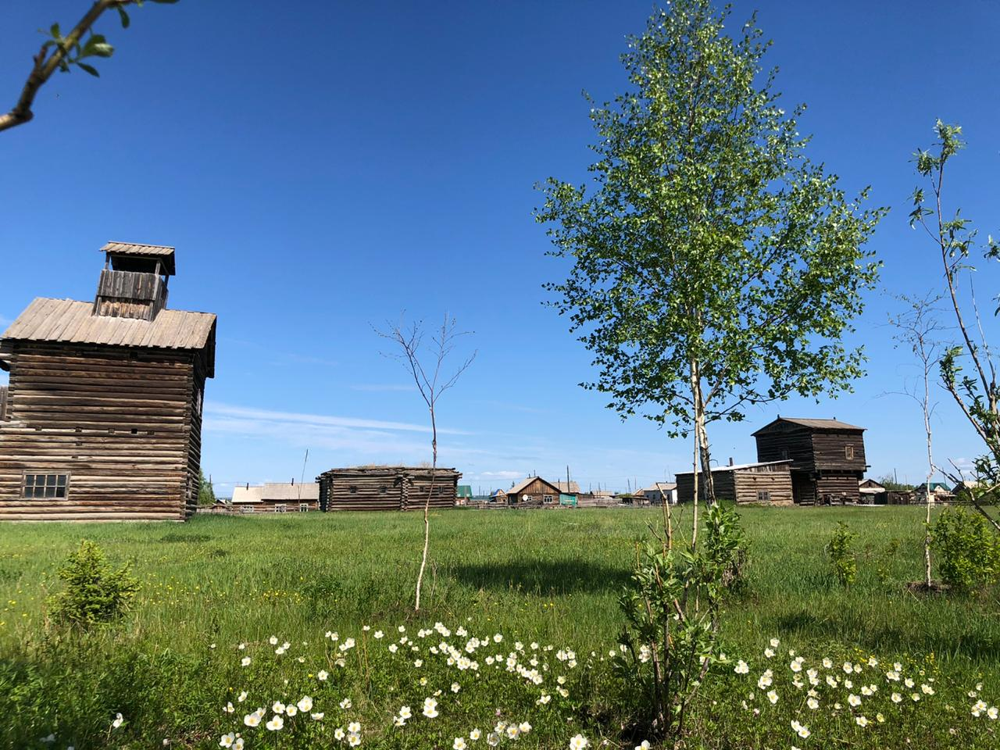

История создания музея
1892 год: Строительство Качикатской Николаевской церкви

В 1892 году началось строительство Качикатской Николаевской церкви в с. Кердем. Благочинный Якутских церквей священник Василий Бережнее дал рапорт Его Первосвященству Мелентию — епископу Якутскому и Вилюйскому: «Честь имею благопокорнейше донести, что по благословению Вашего первосвященства, закладка фундамента Качикатского Николаевского храма на речке Лютенгэ свершена мною 24 апреля 1892 года». (Рукопись Н.Д. Тордеева.) По сооружению Качикатской церкви, согласно контракту, подрядчиком был некий Чагин, вероятно, из якутских купцов или предпринимателей. Из местных жителей мастерами работали Петр Тихонов по прозвищу Чемчок из Качикатского наслега и Николай Алексеевич Борисов по прозвищу Бэриэскин из 2-го Жемконского наслега — знатоки строительства русских домов. В 1906–1909 гг. старостой церкви был избран Гавриил Константинович Павлов — богач 2-го Жемконского наслега, а с 1910 г. — Семен Петрович Барашков, известный богач Качикатского наслега. Оба внесли огромный вклад в обустройство храма и поддержку духовной жизни наслега. Их имена до сих пор с уважением упоминаются в документах прихода. Из архивных материалов известно, что Г.К. Павлов пожертвовал в пользу церкви 500 рублей от себя и 2500 рублей, собранных с населения. А С.П. Барашков от себя — 700 рублей и от населения своего наслега — 300 рублей. За эту меценатскую деятельность в 1912 году оба были награждены серебряными медалями на Станиславской ленте для ношения на груди. В представлении к награде С.П. Барашкова стоит подпись старшины Качикатского наслега Афанасия Елисеевича Кулаковского. При церкви с 1 сентября 1898 года существовала церковно-приходская школа. Приход составляли якуты Качикатского и двух Жемконских наслегов. Численность прихожан в 1914 году составляла 4175 человек. Все церковники владели якутским языком и передавали слово Божье местному населению на их родном языке. Храм стал настоящим культурным и духовным центром, вокруг которого кипела жизнь села, проходили ярмарки, собирались сходы.
1922 год: Трагические события у церкви

12–13 февраля 1922 года около церкви разыгралось трагическое событие, когда небольшой отряд во главе с пьяным командиром зарубил и расстрелял последнего попа и 16 мирных жителей. «Вина» последних состояла в том, что у кого-то из них повстанцы реквизировали сено, кого-то под страхом расстрела заставили собрать свечи у населения. Красные же усмотрели в поступках этих несчастных пособничество бандитам. В 1929 году, в «год великого перелома», активистами Советской власти были собраны кресты и колокола. Во времена советской власти здание церкви долгое время служило клубом, складом, затем и вовсе простаивало. Осенью здесь размещали студентов, прибывших на уборочную работу. О былой красоте напоминал лишь чудом уцелевший иконостас. Несмотря на все тяготы, жители села хранили память о святыне. Старожилы втайне поддерживали порядок вокруг церкви, надеясь, что когда-нибудь в ней снова зазвучат молитвы. Эти надежды сбылись лишь спустя десятилетия.
1989 год: Спасение церкви и решение о создании музея

В феврале 1989 года писатель Суорун Омоллоон, в то время работавший над организацией Соттинского музея, прибыл с указом Министерства культуры о передаче здания церкви в Соттинский музей. В тот же вечер был созван срочный сельский сход. Местные жители, многие из которых помнили храм с детства, категорически отказались отдавать святыню. Единогласно решили: церковь останется в Кердеме. Постановлением схода было решено реставрировать здание и создать на его базе историко-этнографический музей. Ответственным был назначен Захаров Роберт Константинович. Начался долгий путь восстановления: собирали средства, искали мастеров, расчищали прилегающую территорию. С того момента произведено огромное количество работ по улучшению и расширению музейного комплекса. Церковь стала не просто архитектурным памятником, но и центром культурного возрождения всего наслега.
1990–1991 гг.: Перенос экспонатов и открытие комплекса
В 1990 году директор совхоза «50 лет Октября» Н.Ф. Трофимов предоставил 4-квартирный дом для музея. В 1991 году все экспонаты, собранные жителями наслега, были перевезены в новый дом. Территория музейного комплекса занимает 1 га самого высокого холма села. С 1991 года по инициативе энтузиаста-краеведа Захарова Р.К. в с. Кердем создан этнографический музейный комплекс «Самыртай». На территории музея расположены памятники истории и архитектуры: уникальная, единственная в улусе дошедшая до наших дней Качикатская Николаевская церковь (1892 г.); зерносушилка богача-мецената С.П. Барашкова; шестигранный дом-бабарына (XVIII в.); двухуровневый амбар богача Кирилла Скрябина (XIX в.); летний балаган (XVIII в.). Каждый из этих объектов — живая страница истории якутского народа. Комплекс быстро стал известен за пределами улуса: сюда приезжали этнографы, школьные делегации и просто неравнодушные люди, чтобы прикоснуться к подлинной старине. Экскурсии проводили сами сотрудники музея, часто — сам Роберт Константинович.
Музей сегодня
В музее собраны уникальные экспонаты, рассказывающие о быте и культуре якутов, о флоре и фауне края, документы и фотографии по истории края и села. Здесь можно увидеть эвенские и якутские сёдла с древней чеканкой из серебра. Проводятся самобытные праздники (ысыах, куйур), спортивные соревнования по национальным видам спорта, конкурсы ледовых скульптур. Туристы могут получить представление о древней культуре народа саха: услышать звон хомуса и тойук, увидеть национальные обряды — очищения, встречи солнца. Сегодня музей продолжает активно развиваться: открываются новые залы, пополняются фонды, осваиваются грантовые программы. Сотрудники комплекса бережно сохраняют наследие предков и делятся им с новыми поколениями, воспитывая уважение к истории и любовь к родному краю.